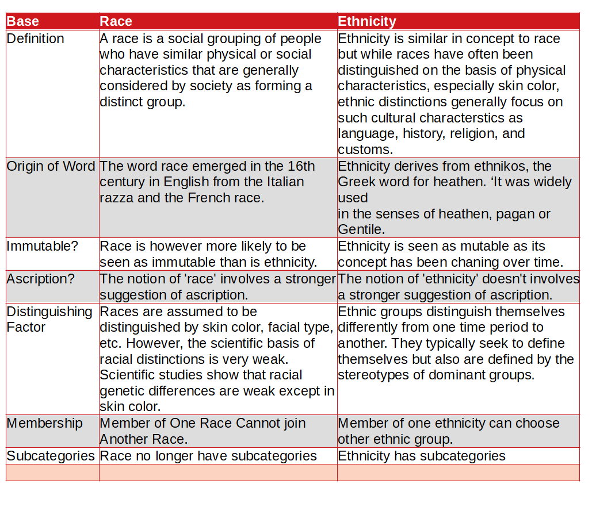

I Love Everything That Makes Me More Human.
Difference Between Race and Ethnicity(Race vs Ethnicity)

What is the main difference between Race and Ethnicity?
The main difference between Race and Ethnicity is Ethnicity is similar in concept to race but while Races have often been distinguished on the basis of physical characteristics, especially skin color, Ethnic distinctions generally focus on such cultural characterstics as language, history, religion, and customs. Ethnicity derives from ethnikos, the Greek word for 'heathen'.
The notion of race has in fact had different meanings in the course of history. It is useful to draw the distinction between race and ethnicity, though this is often blurred. For instance the OED defines 'ethnic' as 'pertaining to race' and 'originating from a specific racial or linguistic group'. More recently there has been the tendency to regard all minorities as 'ethnic'. It is perhaps more useful to think of racial differences as based on phenotype, and ethnic differences as based upon culture.
| Base | Race | Ethnicity |
| Definition | A race is a social grouping of people who have similar physical or social characteristics that are generally considered by society as forming a distinct group. | Ethnicity is similar in concept to race but while races have often been distinguished on the basis of physical characteristics, especially skin color, ethnic distinctions generally focus on such cultural characterstics as language, history, religion, and customs. |
| Origin of Word | The word race emerged in the 16th century in English from the Italian razza and the French race. | Ethnicity derives from ethnikos, the Greek word for heathen. ‘It was widely used in the senses of heathen, pagan or Gentile. |
| Immutable? | Race is however more likely to be seen as immutable than is ethnicity. | Ethnicity is seen as mutable as its concept has been chaning over time. |
| Ascription? | The notion of 'race' involves a stronger suggestion of ascription. | The notion of 'ethnicity' doesn't involves a stronger suggestion of ascription. |
| Distinguishing Factor | Races are assumed to be distinguished by skin color, facial type, etc. However, the scientific basis of racial distinctions is very weak. Scientific studies show that racial genetic differences are weak except in skin color. | Ethnic groups distinguish themselves differently from one time period to another. They typically seek to define themselves but also are defined by the stereotypes of dominant groups. |
| Membership | Member of One Race Cannot join Another Race. | Member of one ethnicity can choose other ethnic group. |
| Subcategories | Race no longer have subcategories | Ethnicity has subcategories |
Race
A race is a social grouping of people who have similar physical or social characteristics that are generally considered by society as forming a distinct group. Race is a potent social reality and an important and enduring component of personal identity. In censuses and most surveys, a designation of race is selected by individual respondents from officially specified categories.
The word race emerged in the 16th century in English from the Italian razza and the French race; it referred to a group of persons, plants, or animals connected by common descent or origin. The concept soon became an important organizing principle for the English, who claimed to be superior through blood ties from the Saxon and Germanic race.
Historically, the concept of race has changed across cultures and eras, eventually becoming less connected with ancestral and familial ties, and more concerned with superficial physical characteristics. In the past, theorists have posited categories of race based on various geographic regions, ethnicities, skin colours, and more. Their labels for racial groups have connoted regions (Mongolia and the Caucus Mountains, for instance) or denoted skin tones (black, white, yellow, and red, for example).
In contemporary scholarship, four main concepts characterize race. First, race is socially constructed, in that humans use symbols to create meaning from their social environment. This means that race is not an intrinsic part of a human being or the environment but, rather, an identity created using symbols to establish meaning in a culture or society. Second, race is partially characterized by physical similarities such as skin color, facial features, or hair texture. Although physical characteristics constitute a portion of the concept of race, this is a social rather than biological distinction. That is, human beings create categories of race based on physical characteristics rather than the physical characteristics having intrinsic biological meaning. Third, race is partially characterized by general social similarities such as shared history, speech patterns, or traditions.
Ethnicity
Ethnicity is similar in concept to race but while Races have often been distinguished on the basis of physical characteristics, especially skin color, Ethnic distinctions generally focus on such cultural characterstics as language, history, religion, and customs. Ethnicity derives from ethnikos, the Greek word for 'heathen'. 'It was widely used in the senses of heathen, pagan or Gentile, until C19, when this sense was generally superseded by the sense of a racial characteristic' (Williams 1983: 119).
However, in the modern era, ethnicity has come to be generally used as a term for collective cultural identity (while race categorises 'them' from outside, ethnicity is used for shared values and beliefs, the self definition of a group, ‘us’). Van den Berghe drew the influential distinction between ethnicity as ‘socially defined but on the basis of cultural criteria’ whereas race is 'socially defined but on the basis of physical criteria' (Van den Berghe 1967: 9).
The terms ethnic group and ethnicity did not appear in standard English dictionaries until 1961, when they could be found in Webster’s Third New International. In the 1972 Supplement to the Oxford English Dictionary, the first usage was attributed to David Riesman in 1953.
In the context of western multicultural societies, ethnicity has become the preferred used term to avoid ‘race’ and its implications of a discredited 'scientific' racism. Ethnicity is generally taken to be a more inclusive and less objectifying concept; indicating the constantly negotiated nature of boundaries between ethnic groups rather than the essentialism implicit in divisions of ‘race’. The crossing of ethnic borders and encounters with those of different ethnic background is one of the most significant experiences in the formation of our identities.
The origin of the word ethnicity is Greek. In Homeric writing, it meant a swarm or flock of animals like bees or sheep, a biologically defined grouping. Eventually the term was applied to humans, and it meant the unity of persons of common blood or descent. The adjectival form, ethnikos (it entered Latin as ethnicus), referred to heathen, pagan, or those “others” who did not share the dominant faith. The same meaning of the word could be found in 15th-century England referring to someone who was neither Christian nor Jewa pagan or heathen. By the 20th century, the meaning of the word changed again and became closer to the original Greek conception. Ethnic started to refer to 'others,' to those who were not 'us.' The term was not in wide circulation.
Hey there, I'm Nischal.
I am a student, a developer and I specialize in
standards-based Web Development(Django, JS, HTML, CSS ) and ML/DL.
I love Everything that makes me more Human. While
not Coding, I play and/or watch football.
Copyright text 2020 by Nischal!!
Newsletter
A rover wearing a fuzzy suit doesn’t alarm the real penguins. Then What Alarms The Penguins. Subscribe Me To Find Out.
Follow Me